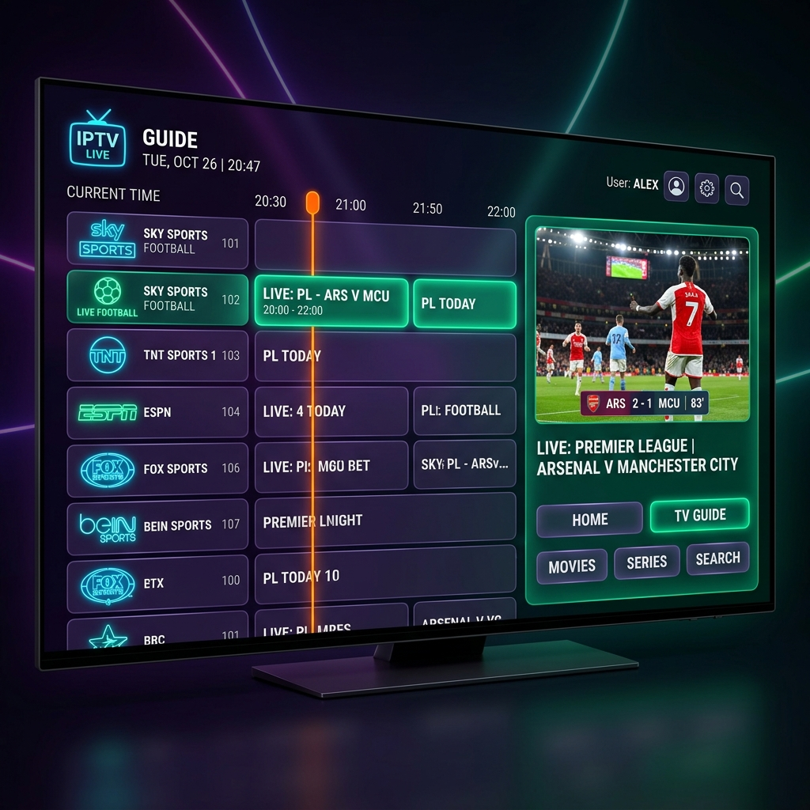
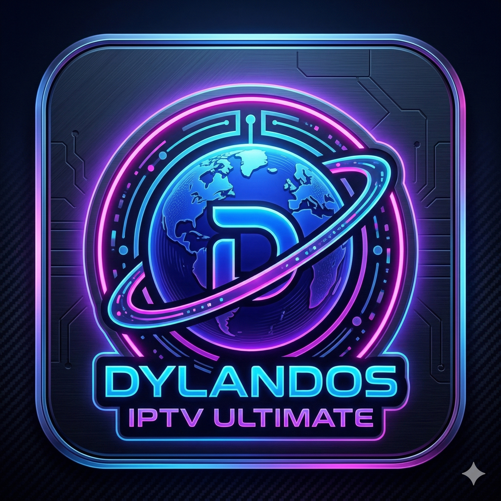
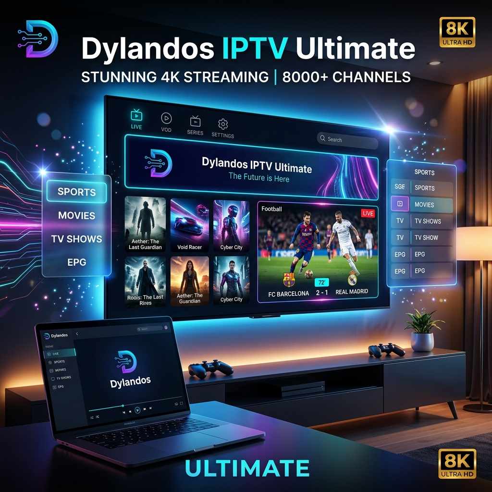
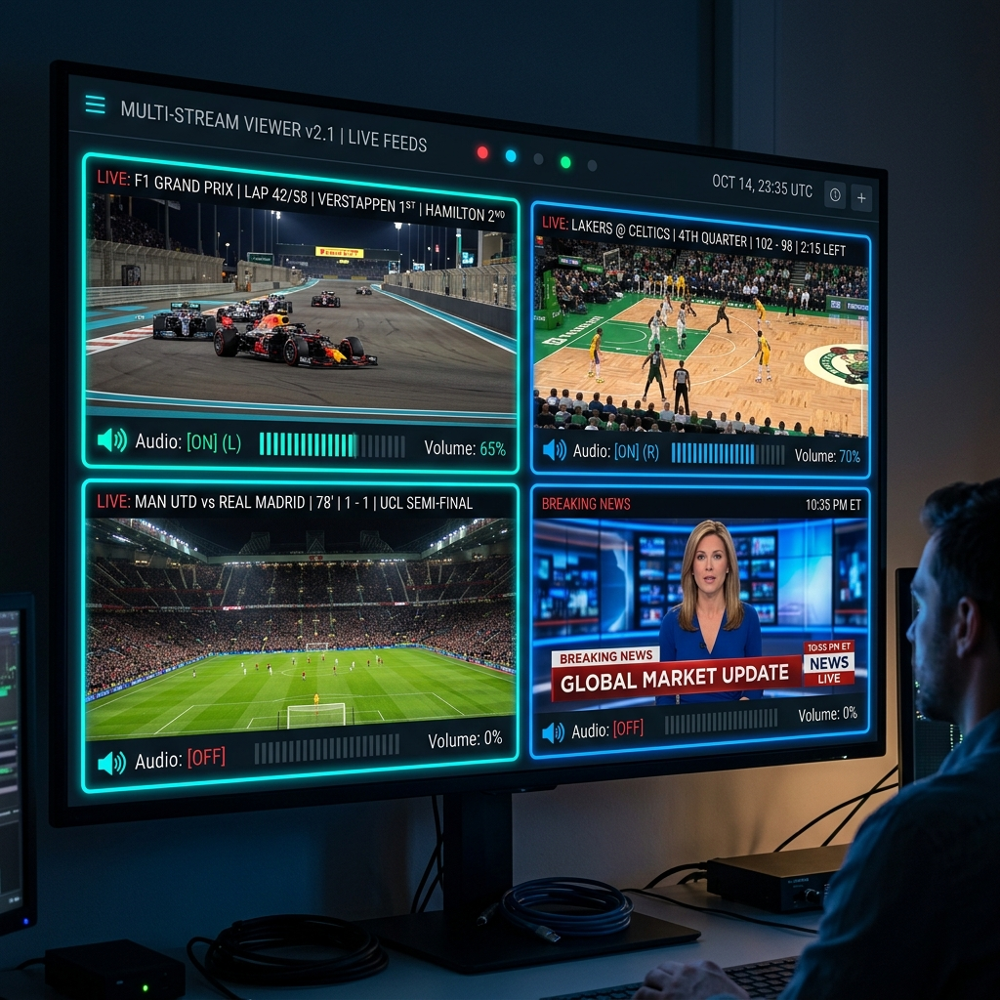
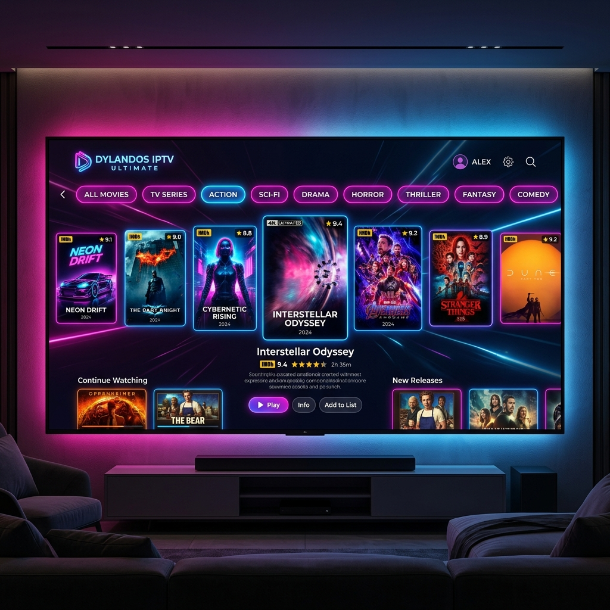
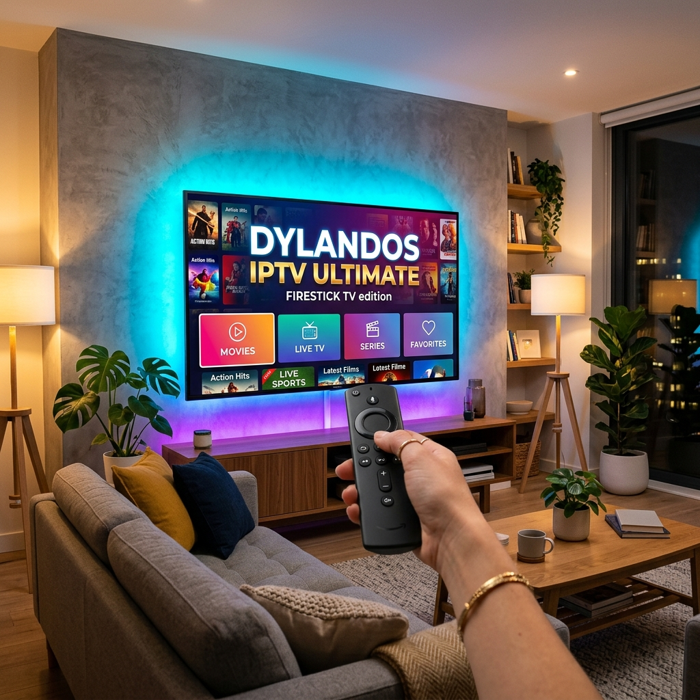

GUIDE + LIVE TV
Find what is on, then get there quickly.
Use Xtream Codes or M3U sources, browse live categories, and navigate an electronic program guide designed for TV remotes.

DYLANDOS IPTV ULTIMATEPrivate beta access opens next week
Dylandos IPTV Ultimate is a personal IPTV player in active beta for Windows, Android TV, and Fire TV. Bring your own authorized provider and help us make every release better.
No IPTV content or subscriptions are supplied. Use only sources you are authorized to access.

Built from the current app
These capabilities are taken from the current Windows and Android source, not a wish list.

GUIDE + LIVE TV
Use Xtream Codes or M3U sources, browse live categories, and navigate an electronic program guide designed for TV remotes.
PLAYBACK
Windows uses MPV with HLS.js fallback. Android uses LibVLC and Media3 paths selected for the content and device.
YOUR LIBRARY
Favorites, viewing progress, custom lists, downloads, parental controls, and multi-view are part of the active desktop experience.

WATCH YOUR WAY
TV-focused D-pad navigation, picture-in-picture support, and DVR features vary by platform and provider.
THE REAL PRODUCT


JOIN THE FIRST TEST GROUP
We are looking for thoughtful testers who can try the app on their own device, describe what happened, and share reproduction steps when something goes wrong.
BETA MEMBER AREA
Register or sign in to see your saved beta request, device profile, and feedback checklist on this device.
GOOD TO KNOW
We are preparing the first beta cohort for next week. Requests are reviewed as space becomes available.
Try the areas you selected, send helpful feedback, and include device details plus clear steps when you find a reproducible issue.
No. Dylandos IPTV Ultimate is a player. It does not provide channels, playlists, subscriptions, or access to copyrighted content.